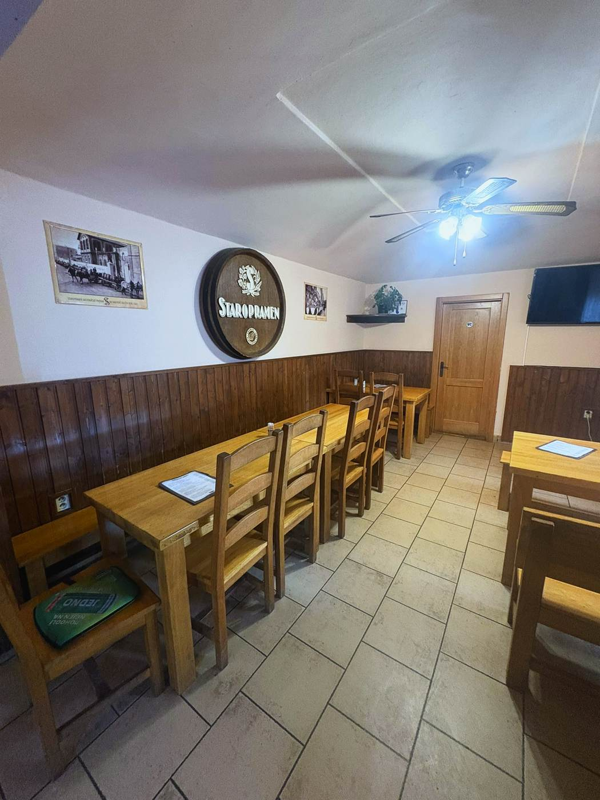
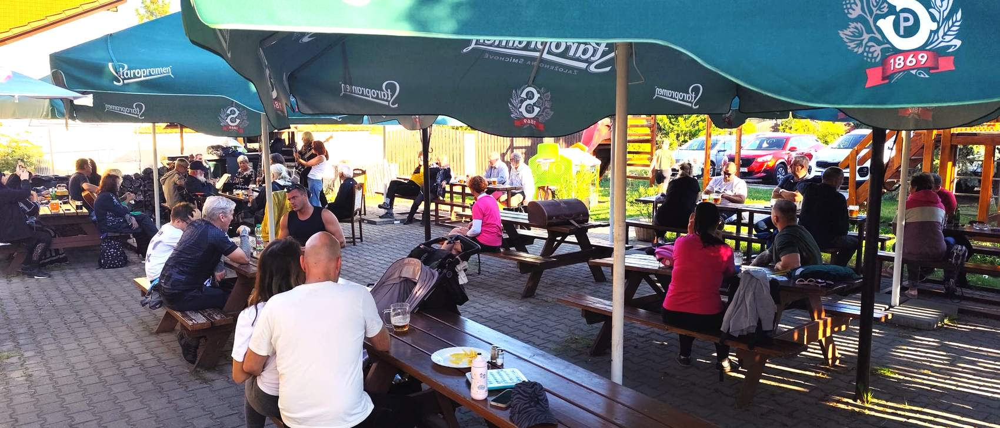
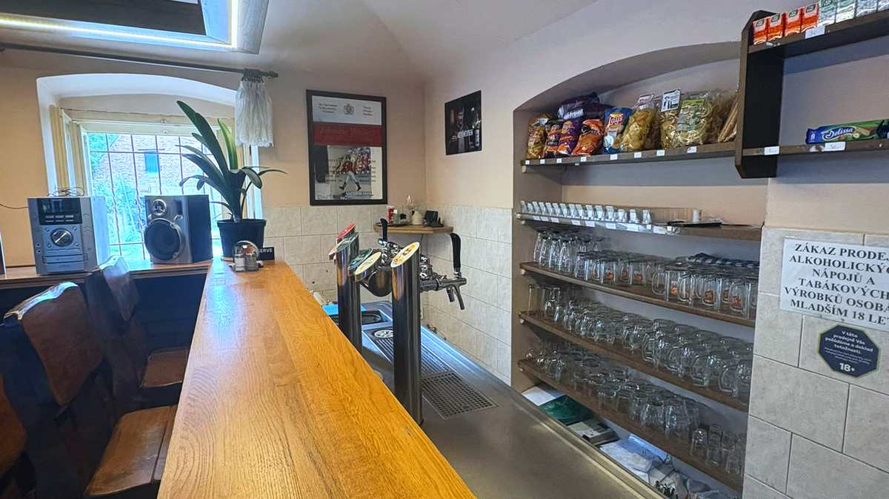
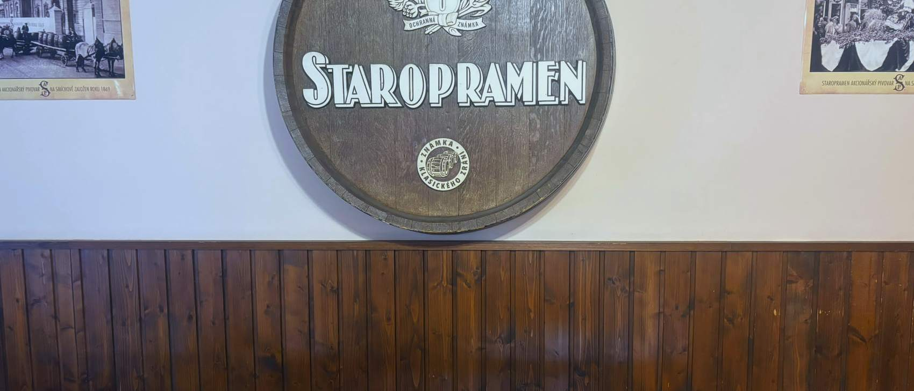
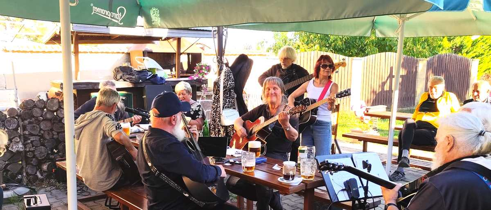
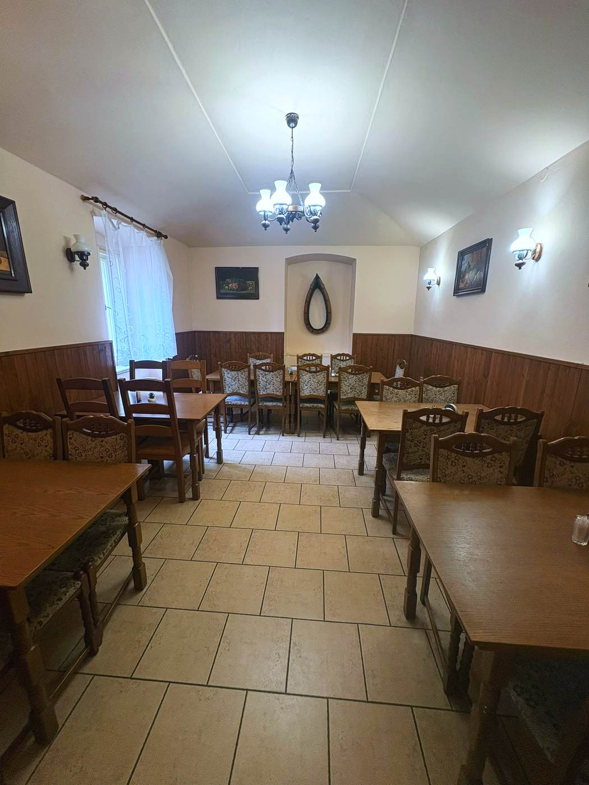

Hostivická 8/10 · Sobín, Praha 17
Česká hospoda v Sobíně
Zahrádka s dětským hřištěm, velké parkoviště, sportovní přenosy na televizi a kuchyně, která vaří poctivou českou klasiku. Deset minut od Zličína.
Hostivická 8/10, Praha 17 Po–pá 10–22 · So–ne 10:30–22 Parkování zdarma
O hospodě
Hospoda, jaká má být
Jsme klasická česká hospoda na okraji Prahy. Točíme Staropramen, vaříme českou kuchyni a nikdo vás od stolu nehoní. Uvnitř je lokál, vedle salonek pro větší společnosti, venku zahrádka s grilem a dětským hřištěm na dohled od stolů.
Parkoviště máme vlastní a velké, takže se k nám dá bez problémů přijet autem i s přívěsem. Sportovní přenosy pouštíme na televizi v lokále — na zápas si u nás klidně zarezervujte stůl dopředu.


Venku
Zahrádka, ze které se nikam nespěchá
Stíněné stoly, gril, hřiště na dohled a parkoviště hned vedle. Od jara do podzimu nejlepší místo v podniku.

Co u nás najdete
Proč k nám lidé jezdí
-
Klasická česká hospoda
Staropramen na čepu, česká kuchyně, dřevěný lokál. Bez zbytečných vylepšení.
-
Velké parkoviště
Vlastní parkovací plocha přímo u podniku, zdarma. Žádné modré zóny ani hledání místa.
-
Dětské hřiště
Prolézačka se skluzavkou hned u zahrádky, na dohled od stolů. Děti si hrají, vy v klidu dojíte.
-
Zahrádka s grilem
Velká venkovní zahrádka pod slunečníky. Od jara do podzimu nejlepší místo v podniku.
-
Sportovní přenosy
Televize v lokále. Na větší zápasy doporučujeme stůl zarezervovat dopředu.
-
Oslavy a rauty
Salonek i celý podnik pro soukromé akce. Domluvíme menu, termín i obsluhu.
Vaříme po celý den
Stálý jídelní lístek
Minutky, speciality kuchyně, saláty i bezmasá jídla. Všechno čerstvé a připravené až na objednávku.

Od výčepu
Staropramen na čepu
K tomu nealko, káva a panáky. Pivo točíme pomalu, protože jinak to nemá cenu.

Co se u nás chystá
Akce
Živá hudba na zahrádce, sportovní přenosy, sezónní akce. Termíny najdete tady i na našem Facebooku.
Jak to u nás vypadá
Fotky z hospody
Klepnutím zvětšíte

Na objednávku
Oslavy, rauty a firemní akce
V lokále je 40 míst, k tomu salonek a v létě zahrádka. Narozeniny, křtiny, firemní večírek nebo smuteční hostina — domluvíme menu, termín i to, jestli chcete podnik jen pro sebe.
Napište na WhatsApp nebo zavolejte. Stačí termín a přibližný počet lidí.
Domluvíme menu, čas a prostor — salonek, lokál nebo celá hospoda.
Přijedete a už se o nic nestaráte.
Ozvěte se
Nejradši máme WhatsApp
Napsat se dá kdykoliv a my se ozveme, jakmile to v provozu jde. Telefon samozřejmě funguje taky.
- ukapalinu@seznam.cz
- Adresa
- Hostivická 8/10
Sobín, Praha 17 - Otevírací doba
-
Otevírací doba podle dnů v týdnu Pondělí 10:00–22:00 Úterý 10:00–22:00 Středa 10:00–22:00 Čtvrtek 10:00–22:00 Pátek 10:00–22:00 Sobota 10:30–22:00 Neděle 10:30–22:00